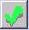
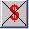

| Solution: |
In this solution...
|
| Details: |
Description This screen allows users to review the list of patients who have had an encounter during the day. After the patient has been seen by the healthcare provider and all in-office procedures (labs, tests, vaccines, etc.) have been completed, the patient's name will appear on the Checkout screen. (Workplans can also be configured to move the patient to a Pre-checkout room for approval before moving to Checkout.) Keep in mind that billing information will not be sent to the billing and scheduling system until the patient has been checked out. For this reason, it is important to clear out any patients in these pre-checkout areas, if applicable, at the end of each day. The patients will remain in the Checkout room until the end of the day. You do not have to manually clear the room. When the calendar date changes to the next day, the Checkout room is automatically 'emptied'. Use the arrow buttons or the calendar to view the Checkout Room for a previous date.
 Posting to the PMS in progress
 Billing was rejected by the PMS
Message sent to Billing Specialist
What Are Those Numbers on the Tabs? Tabs which have treatment rooms or can contain a list of patients will have a set of three numbers, such as 12/3/5. Each of those numbers indicates something about the patients and the waiting tasks (also called service bars) in that area.
So, if the current user is Nurse Betty, and the Office tab reads 3/0/3 there are 3 patients in the exam rooms, zero tasks assigned specifically to Nurse Betty, and 3 additional tasks that are assigned to the roles that are assigned to Nurse Betty (such as Clinical Staff and Lab Nurse).
Want to Learn More?
|
| Symptoms: |
| ID: 040817111464288 | Last Modified: 01/20/2010 04:35:44 PM |
 Billing was successfully posted to the PMS
Billing was successfully posted to the PMS  Problem posting to the PMS
Problem posting to the PMS  Encounter is not billable
Encounter is not billable  Billing is in the process of re-posting
Billing is in the process of re-posting  Documents have been ordered and at least one has not been dispatched
Documents have been ordered and at least one has not been dispatched  Documents ordered have all been dispatched
Documents ordered have all been dispatched 
 What the numbers mean:
What the numbers mean: